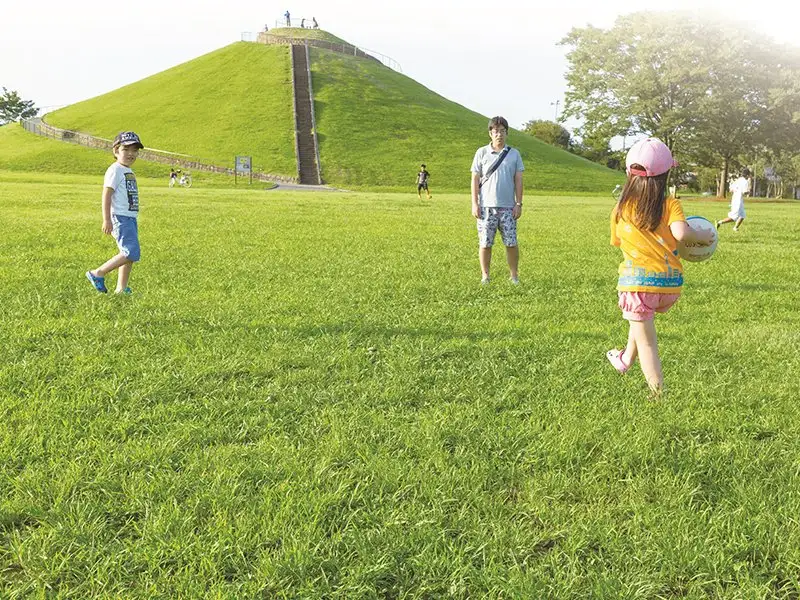
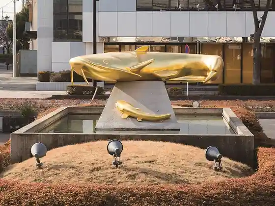
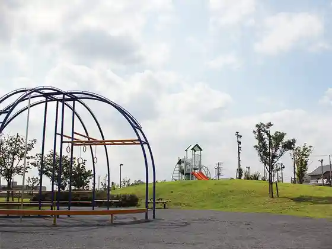
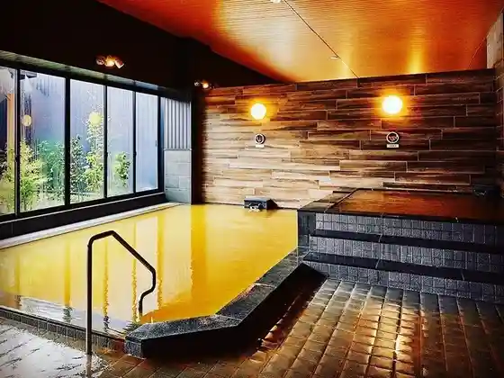
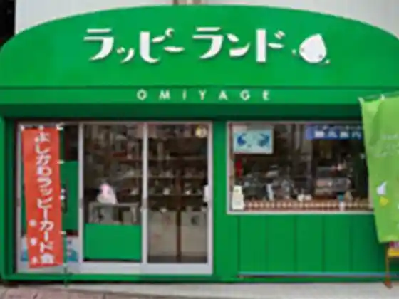

Japan / Saitama / Yoshikawa
Yoshikawa
Yoshikawa · Saitama
Yoshikawa
Highlighted on the Saitama map.

Sights
Nagata Park
Yoshikawa, Saitama · Official / source link
Kin no Namazu
Yoshikawa, Saitama · Official / source link

Bi Nanchu O Park
Yoshikawa, Saitama · Official / source link

Akuaigunisu Musashino Onsen
Yoshikawa, Saitama · 048-973-7900 · Official / source link

Rappii Land
Yoshikawa, Saitama · 048-983-7020 · Official / source link

Yoshikawa Shrine
Yoshikawa, Saitama · 048-982-2034 · Official / source link
Azukomu Momotaro Bin Yoshikawa Park
Yoshikawa, Saitama · 048-955-2067 · Official / source link
Hana Sho Garasu Workshop
Yoshikawa, Saitama · 048-915-7951 · Official / source link
Akua Park
Yoshikawa, Saitama · Official / source link
Kan Park no Kibo Cherry Blossoms
Yoshikawa, Saitama · Official / source link